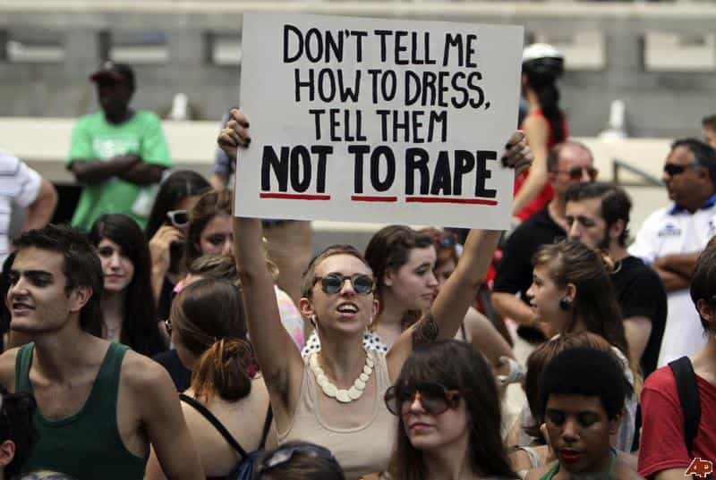

< < < Back
The Flood Of Female Hypocrisy Following The Magaluf 24-Man Blowjob Incident – Return Of Kings
Earlier this month, footage of an Irish girl performing sex acts on 24 men in quick succession on holiday in Magaluf, Spain shocked and rocked the UK – for about 24 hours. The nsfw video sparked a comical, hypocritical-at-times debate and mud-slinging match as to what was responsible for the ‘depravity’.
Background
Magaluf is a purpose built resort in Majorca popular with Britons as a stag-weekend or package-holiday destination for visitors looking for sun, sea and sex (although not necessarily in that order).
Initially thought to be an act performed in return for a free drink, the girl in question, reportedly from a strict religious family in Northern Ireland, was filmed performing oral sex on 24 men in a nightclub in return for winning a ‘holiday’ – which turned out to be the name of a £3 (or a £4) cocktail instead. The video footage, which lasts about two and half minutes, shows the girl moving from one man to another as music blares in the background. She encourages the men to pull their trousers down as a crowd of drunken revelers cheer her on. The disturbing footage was taken following a 12-hour drinking session organized by Carnage Magaluf. According to some witnesses, the girl returned to repeat her antics later, while the video went viral on Twitter and Facebook after being widely shared by the huge number of British tourists on holiday in Spain this summer. At the time of writing this, investigations were still going on about the incident.
The comical fallout: “Disinfect your mouth”, and “Why does it matter?”
Nevertheless, the video sparked outrage in both Spain and the UK as soon as it became viral – which has made the girl presently go underground.
The public opinion was polarized about the incident–especially among women–which often sounded at times more like the pot calling the kettle black. Notable opinions came from Nicole Scherzinger, who even asked the girl ‘to disinfect her mouth’:
“Child, you better get on your knees and pray – after you disinfect your mouth.
“You better find God and ask for forgiveness. I’ll give her a drink, a smack in the head. You’re talking to a girl who grew up in a Catholic family, my grandfather is a priest, my mum taught me strong morals.“
“I think it’s degrading, it’s sad, it’s disgusting and it’s why guys be talking about ‘bitches and hoes’ and all these things. I cannot stand any of that.”
*Raises an eyebrow*
Whereas Apprentice Star Luisa Zissman came to the defense of the teenage girl, and said that the video was “just the unlucky one that went viral”. And so did feminists.

Her opinion:
“So what if she goes around crawling on her knees offering it to everyone and anyone that wants it, why does it matter?“
“Don’t get me wrong, I’m not saying I agree with what the girl did, but I do think we need to cut her some slack.
“You can look at it two ways; she’s young, dumb, drunk and made mistakes, or she’s an 18-year-old WOMAN who has every right to do what she wants with her body.“
She also added that the girl was no “slag” or “slut”, adding: “I’m sure she’ll never give anyone oral sex ever again, so her numbers will average out eventually, but why do we all care that much?”
At the same time asking why the men who took part in the ‘debauchery’, weren’t put to shame the way the girl was. (Of course. Men, the perennial culprits.)
Zissman’s comments however drew outrage from women who called her out for her ‘bad mothering’.
At the same time, the usual white-knighting debates about sexploitative games in return of free drinks (reportedly called ‘mamading’) of ‘innocent’ but drunken women tourists on vacations to Magaluf, and whether clubs there should be closed down where such activities supposedly occur, ensued. Who’s forcing these women to visit Magaluf , or why are women indulging in mamading in the first place? Is Magaluf as a place, responsible for this depravity? Don’t such incidents, or even worse, occur elsewhere in modern societies – sometimes daily? For example, what happens in drunken college sex parties in the West?
Meanwhile, the boss of Carnage Magaluf defiantly refused to apologize, and said that the girl was not forced to indulge in this act of debauchery.
“I wasn’t the one who forced her to get to the floor. I’m not going to apologise to her family, I’m sorry.
I’ve no moral responsibility for this. I wasn’t even fully aware of it at the time.
Debate also arose about the questionable behavior of Magaluf tourists. Someone or something had to be blamed for the girl’s ‘sluttiness’ in this incident, as none accepted accountability for the incident. The fallout raised questions about modern female accountability for personal behavior – while exposing hypocritical paradigms about sluttiness, selective slut shaming and slut acceptance, and societal exoneration of such behavior to push the blame onto other factors.
“Slutty” – a female influenced ambiguous definition
According to this definition:
Slutty (adjective): having loose sexual morals
Examples:
– you might be taken more seriously if you didn’t wear that slutty outfit
-a TV reality show that appears to be nothing more than an endless celebration of a household of slutty alcoholics>
Synonyms: skanky [slang], slatternly, sluttish, slutty, trampy
Related Words: whorish; indecent, lascivious, lewd, wanton; indecorous, unbecoming; corrupt, debased, debauched, degenerate, depraved, dissolute, libertine, perverted, reprobate
However, I find it amusing to note how modern women define the terms ‘slutty’ and ‘sexy’. More often than not, the thin line between the two is played around by modern women, depending on theirs as well as modern societies’ arbitrary interpretations and selective application of these two adjectives.
Are these, ‘slutty’ or ‘sexy’ gestures and outfits? What would you call the below?
Sexy, or slutty?
I guess the pic below is ‘non slutty’ – even if it may appear to be
Scherzinger herself was convinced last year that she was too “classy” to compete for a Grammy or an Oscar, and she believed her ‘good’ girl image prevented her from reaching a high level of success.
According to this article, she said:
“I come from the most religious family. My grandfather is a priest.
“And if they support me in all this, and they do, then I’m OK. I’m being sassy and classy, I’m having fun.
“I’m not coming from a dark place. To be honest with you, I sometimes wish I were more slutty. I’d probably be more successful if I were.
“This is such a tough industry. To make it, you have to sell your soul to the devil. That’s probably why I haven’t quite reached the top of my mountain.
“I mean, where’s my Tony Award, my Grammy, my Oscar? Why don’t I have any of those things yet?”
I wonder: how can a ‘good’ girl, be ‘more slutty’ – without being slutty at first? And if she becomes slutty, does she remain ‘good’? And what must one do to become ‘more slutty’?
*Confused*
From what I understood, cockteasing in modern societies, either through seductive gesture or slutty attire, is still not slutty, as long as it does not involve sexual contact . A ‘religious’ girl could indulge in relentless cockteasing behavior and still be a ‘good’ girl as long as if she’s probably a virgin or she simply doesn’t put out for sex. Modern women can exhibit all these traits to be safely called as ‘sexy’, instead of the derogatory ‘slutty’. Modern men will have gradually accepted and adapted to that—we’ve known, seen, and are seeing this all along. The question remains: how more will modern women continue to play around with or push those boundaries?
This sounds similar to the description of the male-baiting termagant feminist, what Chinweizu mentions in the Anatomy of Female Power, which I highlighted in an earlier article. She dresses ‘sexy’ (or slutty) but expects men not to perceive her sexually. In this context of ‘slutty’, you could also interpret her as a ‘good’ girl who may dress ‘slutty’ , bait you with sexually suggestive gestures but expects you not to call her a slut, as she doesn’t put out.
More hypocrisy: a parody of the term ‘religious’
This stirs up another question: who or what is a ‘religious’ girl?
The girl in the incident came from a strict ‘religious’ background, which however didn’t stop her from indulging in ‘sin’ – whether out of own failure to deal with sexual frustration (or repression), weak faith, or the twisted modern interpretation of female virginity which could’ve possibly influenced her behavior. A number of ‘religious’ women and young girls today indulge in copious premarital anal or oral sex to safeguard their ‘technical’ virginities, because of wanting to ‘save’ themselves for marriage, yet seek these alternative ways for release from sexual frustration.
Even pornstars could be or are ‘religious’. Read “I’m a Porn Star, and I Believe in God”, or “Porn Stars More Religious, Have Higher Self-Esteem Than Other Women”.
Flummoxing. “Who’s a ‘good girl’? Who’s a slutty girl? Who’s a ‘sexy’ girl? Who’s a ‘religious’ girl?”
The lines between them are getting blurred as ever, especially when modern women and societies start defining them.
Call it anything, BUT SLUTTY
So what is to blame?
All said and done, other questions also arise after the comical fallout of this story:
- Why did the girl originally travel to Magaluf, a supposedly well known ‘sex’ destination, in spite of her ‘strictly religious’ background?
- Why did she go to a pub that is famous for being a place where women were being ‘bullied’ into sex acts?
- Why did she indulge in the sex acts voluntarily?
- If she did them willingly, why are her parents being blamed for her actions?
-
Why did she return next day to the club to repeat her antics, as per witnesses?
- Is she a solitary exception, or are there women from her culture behaving much worse at this very moment elsewhere, or in Magaluf presently?
- Why the fuck are non-locals debating about what should happen or not in Magaluf?
- Mamading: why do ‘innocent’ female tourists there whore themselves (or their mouths) for free drinks, even if supposedly being ‘encouraged’ by others? Are these women child-like (easily led or influenced with no mind of their own), or do they have self control or self esteem issues?
- Do regular Magaluf visitors behave better when they travel elsewhere to other party hotspots, e.g. Ibiza, Thailand, Latin America, Caribbean, etc?
- Will shaming the girl discourage women from behaving like her in the future, or instead negatively encourage more narcissistic women to follow suit, in a world where sex selfies and self made amateur porn are increasingly becoming popular?
- How would this story affect the girl’s future, and girls who’d behave like her?
- Despite all the present public shaming, would this girl still not get a man someday?
- How long will this story remain in public memory, and affect female behavior? Do we really fucking care, when our societies itself promote female whoredom, sluttiness and slut acceptance in the name of modernism?
Luisa Zissman’s statement, about how this girl’s numbers would average out eventually, sounds distasteful to accept, but does bear some truth. Zissman correctly estimates that with time, this incident would indeed be erased from public memory of the callous societies we live in today. This girl, presently underground, would then be accepted back in the hypocritical world which is shaming her now, and she might even then become a mini-celebrity among the breed of slutty women rapidly being produced today by that very world. Who knows she might even be offered a shot at porn someday. And still have some guy wanting to wife her up then, in spite of this ‘inglorious’ incident.
‘Proud to be a Slut’
Our complacent modern societies are where women titillate, or could even urinate, defecate, and fornicate in public. Women could take sex selfies , make amateur porn and broadcast it on social networks, waiting for likes from anonymous viewers to ego-stroke their never-ending female narcissism. Our societies are where female pornstars claim to love God and some even wear crosses dangling down their bodies while getting sexually spit-roasted on screen, whereas in real life whores and used up sluts are wifed up by modern thirsty men. Women are encouraged to be as slutty or ‘sexy’ as possible, female virginity is both shamed and practiced with a twisted definition, whereas sluttiness is celebrated in semi-nude slutwalks.
And a number of men don’t care (not that they could do something about it). Hell, some even encourage it.
Cock-teasing men and male baiting is considered sexy and acceptable, while dressing ‘slutty’ is not slutty, often due to feminist influenced modern social opinion.
Welcome to the mind-boggling hypocrisies of 21st century modern feminist women and societies.
Considering these paradigms, so what if this one anonymous girl’s a ‘slut’, when our dysfunctional societies actually promote and produce millions of similar, if not worse sluts today with these very dysfunctional social paradigms? Don’t misunderstand me: I’m not defending her at all—she isn’t a victim as she returned the next day to resume her antics as per witnesses, but I’m amused at holier-than-thou women criticizing her for her sluttiness, for some of them could very well be exhibiting slut-like behavior themselves while overlooking the dysfunctional social paradigm which breeds such behavior. Modern women would rather do away with, shame or even defend one anonymous slut, but never tackle the social system which produces hundreds of her kind. As long as that slut producing system isn’t tackled, you’d find such incidents in the future again.
Hypocrisy breeds degeneration
Zissman’s statement about the girl being ‘unlucky’ for the video going viral is indeed the callous but damnable truth about the hypocritical nature of modern societies today. She’s right in her estimation again because she knows (as all know) that people are indeed making a mountain out of a molehill with their ‘outrage’, only because the video went viral. Had the girl not been filmed, the incident would’ve been shrugged off and forgotten from the memories of the onlookers, and been unknown to the world. Despite the outrage, people will indeed forget this incident with time, and women will continue to emulate this girl elsewhere, both in public or private considering the permissive and slut-accepting times we live in.

Considering the present internet rage of sex selfies, I wonder what would’ve been the public or social reaction had she tweeted pics of herself blowing those men. Instead of the ridicule she’s facing now, she would’ve probably received acceptance and likes. Her ‘blunder’ could’ve been that she was inebriated to get caught on video, whereas there could be possibly women slutting it out in Magaluf, even worse than her, at this very moment that you’re reading this article. Such is the hypocrisy we see today in our modern societies.
And realistically speaking, the hypocritical publicized outrage about this incident won’t change existing social mores about modern female sluttiness, but possibly even promote more travel to Magaluf for more narcissistic and slutty modern women would instead be intrigued by this incident to try out their chances at slut fame there. If the video was tweeted to make it viral to shame her as an individual, it’s achieved its purpose, at least for now. To shame sluthood wholly, there’d have to be hundreds of individual viral videos flying all around, as well an existing degree of some personal shame within those ‘sluts’ to actually feel ashamed for their sluttiness. With this girl there was; that’s why she’s probably underground. But with hardcore seasoned sluts, you might as well forget about that. Shaming them would achieve the opposite.
This incident, and many more unreported incidents like these, are the result of a dysfunctional social paradigm which has taken decades to mature and bear its rotten fruit today, and which must be dismantled instead. There could be, and are hundreds like this girl who emulate her daily in seedy clubs, public places, back alleys, university corridors, sororities, frat parties, offices, cars or behind closed doors at the very moment you’re reading this article, yet those women wouldn’t come in to the limelight simply because they’re not being filmed to go viral. And even if these women were, the worst possibility is that they’d become mini-celebrities eventually on account of that exposure, in the slut-celebrating modern societies today.
The hypocrisy of modern societies is that they always need someone or something to blame, so as to exonerate modern female behavior—either a tourist spot, career, religion, nationality, money, fame, age group, family, or the usual and perennial scapegoat of them all—men. There must be a scapegoat to pin the blame on for modern women to escape responsibility and the consequences for their actions. Modern women thus face negligible to no consequences for their actions, even if the ‘outrage’ is temporary. The actual culprit is the dysfunctional social paradigm which promotes this to create such women. A single slut is just the tip of the iceberg, there are hundreds of sluts being spawned and bred in such societies, and it is the dysfunctional societal paradigms there which must be shamed.
We say that consistency is masculine, because consistency is against indiscipline and complacency. But the only thing consistent about slut condoning and producing modern feminist societies are their ‘consistency’ to be complacent yet hypocritical about modern female ‘sluttiness’, by actually producing more of them, while superficially shaming them, as seen in this girl’s case or more.

The state of modern societies and culture?
Disgust is the only emotion which one can feel for the girl’s actions, but also to the superficial ‘prudish’ hypocrisy of the same societies which are shaming her presently and are ironically producing and promoting more clones of her globally every day. Instead of asking this girl to ‘disinfect’ her mouth (which would do nothing to disinfect her character – and probably worsen it out of the negative publicity), it’s time modern societies looked within and disinfect themselves from their own self created dysfunctional scourges of female hypocrisy, sluttiness and superficial shaming. The wall is softer than we think for women—even sluts—in our hypocritical societies today.
Read More: ‘Kirill Was Here’ Exposes The Hypocrisy Of Feminism


{kind=link}
{kind=link}
{kind=link}
{kind=link}
{kind=link}
{kind=link}
{kind=link}
{kind=link}
{kind=link}
{kind=link}
{kind=link}
{kind=link}
{kind=link}
{kind=link}
{kind=link}
{kind=link}
{kind=link}
{kind=link}
{kind=link}
{kind=link}
{kind=link}
{kind=link}